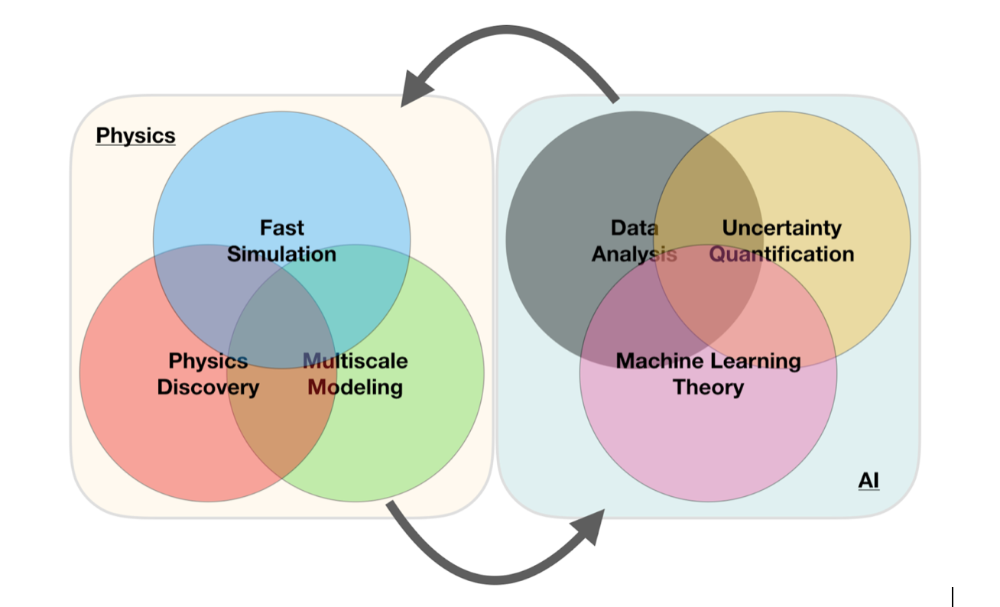

Mathematics of Machine Learning
Contents
What is this talk about?
Many folks to thank
A simple perspective on the interface between ML and Physics
AI/ML and some statements you may have heard (and what do they mean?)
Scientific Machine Learning
Machine Learning software
Lots of room for creativity
Types of machine learning
Examples
And more
Selected references
What are the basic ingredients?
Quantum Monte Carlo and deep learning
The electron gas in three dimensions with \( N=14 \) electrons
Extrapolations and model interpretability
Statistical learning and data analysis
Bayes' Theorem
A simple perspective on the interface between ML and Physics

«
1
2
3
4
5
6
7
8
9
10
11
12
13
...
18
»